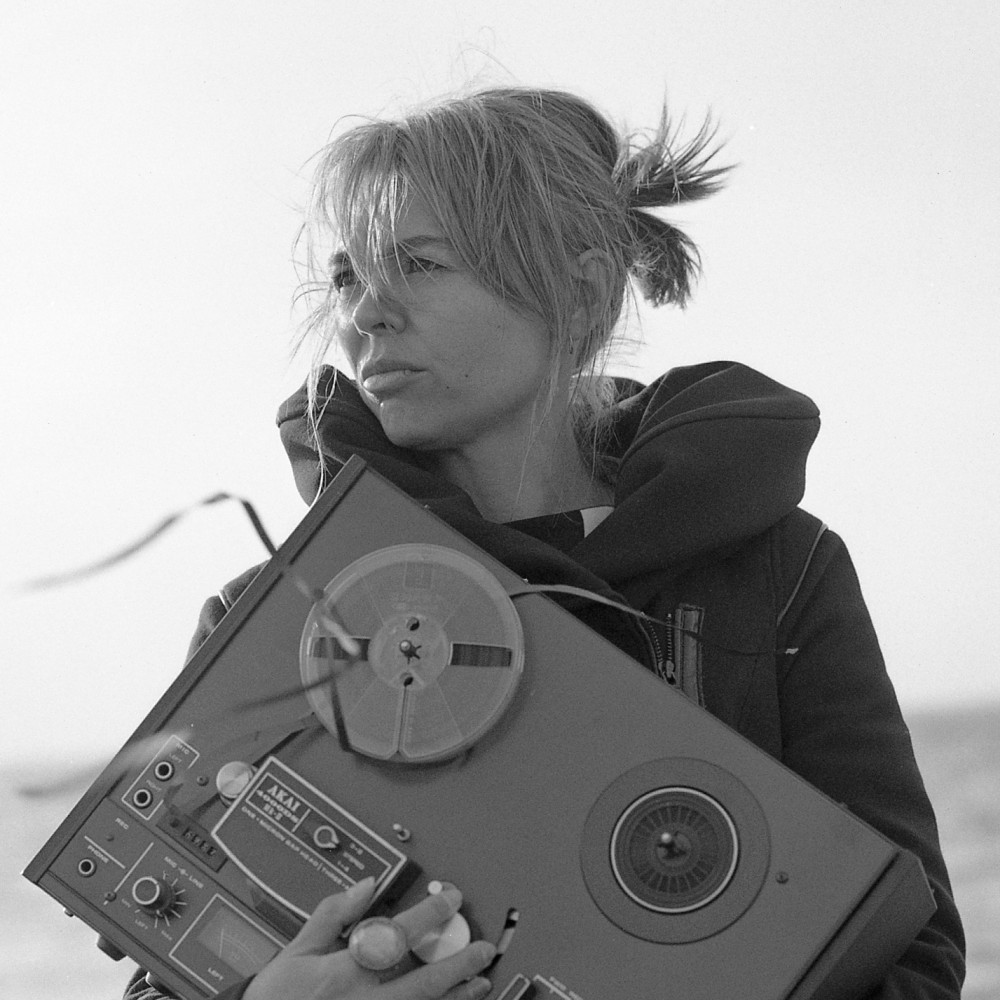

Jamie Webber
Creative Audio Developer
Working to make compelling immersive sound environments using avant-garde microtonal harmonies and influences from neuroscience and complexity studies
My projects
midigenSimple python program using mido to output MIDI files with note and pitchbend values determined by frequency addition of a starting dyad. Have a listen: |
microtonal/post-spectral compositionComposing beautiful music using harmonic material generated from a variety of spectral calculations. I'm looking for something that sounds new and intriguing but is also interesting to listen to just for the sound of it. Listen to the Bozzini Quartet's take on my music: |
Some important influences - click to listen
Claude VivierVivier (1948-1983) was a Canadian composer of orchestral and vocal music who was considered by György Ligeti to be the "greatest French composer of his generation." |
|
|  |
Nicole LizéeLizée is a Montreal-based composer who works with vintage electronics and "resurrects dead sounds" to make compelling new multimedia artworks. |
Agostino Di ScipioDi Scipio is an Italian artist who uses live feedback systems and interactive audio programming to make "auditory ecosystems." He says the the role of the artist today is to "compose desirable interactions." |